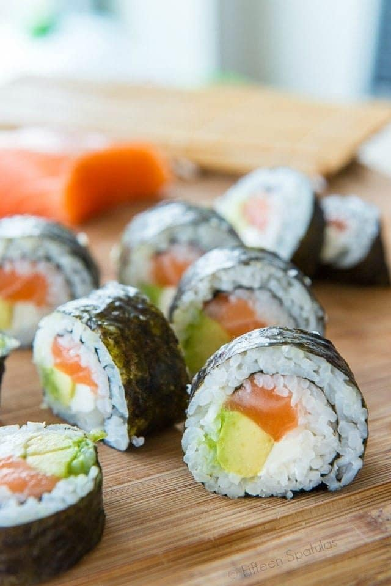

Sushi

Description
Homemade sushi recipe to remember Japan!
Ingredients
- 6 sheets sushi seaweed aka nori
- 1 batch prepared sushi rice
- 1/2 lb sushi-grade raw salmon or desired raw fish of choice
- 4 oz cream cheese sliced into strips
- 1 avocado sliced
- soy sauce for serving
Steps
- Place the seaweed on a bamboo mat, then cover the sheet of seaweed with an even layer of prepared sushi
rice. Smooth gently with the rice paddle.
- Layer salmon, cream cheese, and avocado on the rice, and roll it up tightly. Slice with a sharp knife, and
enjoy with soy sauce.
Main Page